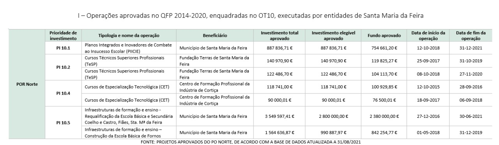
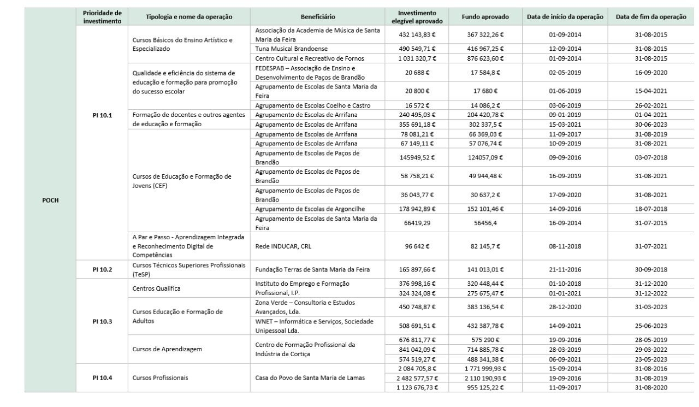
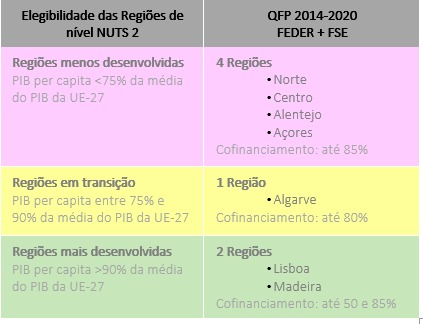
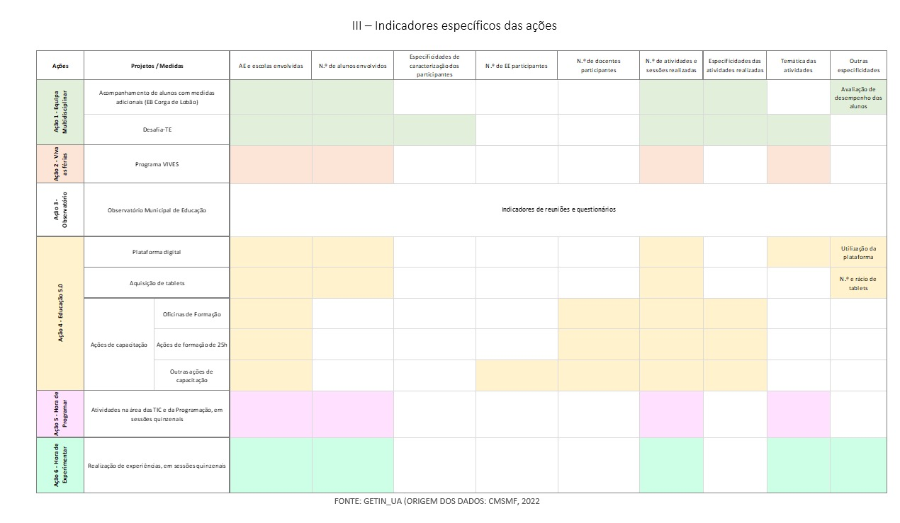

REFERÊNCIAS BIBLIOGRÁFICAS E ELETRÓNICAS
Presidência do Conselho de Ministros. (2018). “Decreto-Lei 54/2018”. Diário da República 1ª série, 129 (julho): 2918 – 2928. https://data.dre.pt/eli/dec-lei/54/2018/07/06/p/dre/pt/html
Câmara Municipal de Santa Maria da Feira. Disponível em: https://cm-feira.pt/.
Mendeley Cite/Mendeley Reference Manager
Agência para o Desenvolvimento e Coesão. (n.d.). Monitorização - Enquadramento. Retrieved August 23, 2022, from https://www.adcoesao.pt/fundos/portugal-2020/monitorizacao/enquadramento/
Allers, M. A., & de Greef, J. A. (2017). Intermunicipal cooperation, public spending and service levels. Local Government Studies, 44(1), 127–150. https://doi.org/10.1080/03003930.2017.1380630
DGEEC. (2022a). Educação Inclusiva 2020/2021. Apoio à Aprendizagem e à Inclusão, escolas da rede pública do Ministério da Educação.
DGEEC. (2022b). Plano 21|23 Escola+. Segundo relatório de monitorização. http://www.dgeec.mec.pt
Garrone, P., Grilli, L., & Rousseau, X. (2012). Local Government Studies Management Discretion and Political Interference in Municipal Enterprises. Evidence from Italian Utilities Management Discretion and Political Interference in Municipal Enterprises. Evidence from Italian Utilities. https://doi.org/10.1080/03003930.2012.726198 Gaspar de Matos, M., Branquinho, C., Noronha, C., Moraes, B., Santos, O., Carvalho, M., Simões, C., Marques, A., Tomé, G., Guedes, F. B., Cerqueira, A., Francisco, R., & Gaspar, T. (2022). Observatório de Saúde Psicológica e Bem-Estar: Monitorização e Ação. IESE, ISCTE, & PPLL Consult. (2021). Avaliação do Contributo do PT2020 para a Promoção do Sucesso Educativo, Redução do Abandono Escolar Precoce e Empregabilidade dos Jovens. https://doi.org/10.38116/bapi25 Verdasca, J. (2020). Contributos para o desenvolvimento de um sistema de auto e multirregulação educativa. Revista Portuguesa de Investigação Educacional, n.o Especial, 111–143. https://doi.org/10.34632/investigacaoeducacional.2020.8503
Mendeley Cite/Mendeley Desktop Carvalho, M., & Joana, L. (2020). Uma análise comparada: sistemas inspetivos de alguns países. Revista Lusofona de Educacao, 50(50), 27–41. https://doi.org/10.24140/issn.1645-7250.rle50.02 CCDR-Norte. (2022). Programa Regional do Norte 2021-2027: Proposta. https://www.ccdr-n.pt/storage/app/media/uploaded-files/po20norte202030versc3a3oconsultapublica.pdf DGEEC. (2022). Resultados Escolares: Sucesso e Equidade. DGEEC, DGEstE, & IGeFE. (2021). Carta Educativa, Guião para Elaboração. https://www.igefe.mec.pt/Files/DownloadDocument/17?csrt=5775597188220950806 Education Scotland. (2015). How good is our school? (4th edition). www.educationscotland.gov.uk/resources/h/hgios4/ Ehren, M., & Shackleton, N. (2016). Risk-based school inspections: impact of targeted inspection approaches on Dutch secondary schools. Educational Assessment, Evaluation and Accountability, 299–321. https://doi.org/10.1007/s11092-016-9242-0 Inspeção-Geral da Educação e Ciência (IGEC). (2016). Avaliação Externa das Escolas QUADRO DE REFERÊNCIA PARA A AVALIAÇÃO EXTERNA DAS ESCOLAS. https://www.igec.mec.pt/upload/AEE_2016-2017/AEE_16_17_(1)_Quadro_de_Referencia.pdf Inspeção-Geral da Educação e Ciência (IGEC). (2018a). Terceiro Ciclo da Avaliação Externa das Escolas - Âmbito, princípios e objetivos. https://www.igec.mec.pt/upload/AEE3_2018/AEE_3_Amb_princ_objetivos.pdf Inspeção-Geral da Educação e Ciência (IGEC). (2018b). Terceiro Ciclo da Avaliação Externa das Escolas - Quadro de referência. https://www.igec.mec.pt/upload/AEE3_2018/AEE_3_Quadro_Ref.pdf Ioannidou, A. (2010). Educational monitoring and reporting as governance instruments for evidence-based education policy. International Perspectives on Education and Society, 12, 155–172. https://doi.org/10.1108/S1479-3679(2010)0000012011/FULL/XML Marques, J. L., Wolf, J., Borges, M., & Batista, P. (2020). Sistemas de apoio à decisão em planeamento: desafios metodológicos e conceptuais. TPU: Território, Planeamento e Urbanismo: Teoria e Prática, 2, 52–79. https://doi.org/10.34624/TPU.V0I2.23720 Ministério da Educação. (2011). Propostas para um novo ciclo de avaliação externa de escolas, Relatório Final, Grupo de Trabalho para a Avaliação Externa das Escolas 2011. https://www.igec.mec.pt/upload/AEE2_2011/AEE2_GT_2011_RELATORIO_FINAL.pdf Ministério da Educação, & Inspeção-Geral da Educação (IGE). (2010). QUADRO DE REFERÊNCIA PARA A AVALIAÇÃO DE ESCOLAS E AGRUPAMENTOS DE ESCOLAS. https://www.igec.mec.pt/upload/AEE_2011/AEE_10_11_Quadro_Referencia.pdf Oliveira, P., Clímaco, M., Carravilla, M., Sarrico, C., Azevedo, M., & Oliveira, J. (2006). Relatório final da actividade do Grupo de Trabalho para Avaliação das Escolas Dezembro 2006. https://www.igec.mec.pt/upload/Relatorios/AEE_06_RELATORIO_GT.pdf POCH. (2021). Novo indicador de equidade na educação. https://www.poch.portugal2020.pt/pt-pt/Noticias/Paginas/noticia.aspx?nid=750 Portugal 2030. (2022). Programa Demografia, Qualificações e Inclusão - Proposta de programa. Santos, S., Duarte, J. & Marques, J. L. (2019). Quadro de referência aplicado aos instrumentos de gestão da rede e da política educativa à escala local. Revista de Desarrollo Sustentable, Negocios, Emprendimiento y Educación, 1(1), 1–19. The Educational Institute of Scotland (EIS). (2019). EDUCATION SCOTLAND INSPECTIONS, General, Advice for members. www.eis.org.uk XXI GOVERNO - REPÚBLICA PORTUGUESA. (2019, February). Modelo de Avaliação Externa das Escolas – novo ciclo / Avaliação externa alargada às escolas profissionais privadas e às escolas com contrato de associação/patrocínio. NOTA À COMUNICAÇÃO SOCIAL. https://www.portugal.gov.pt/download-ficheiros/ficheiro.aspx?v=%3D%3DBAAAAB%2BLCAAAAAAABAAzN7Q0AQCs6SFGBAAAAA%3D%3D
| - Operações aprovadas no QFP 2014-2020, enquadradas no OT10, executadas por entidades de Santa Maria da Feira


|| -Taxas de cofinanciamento no quadro financeiro plurianual 2014-2020

Elegibilidade das Regiões de nível NUTS 2 QFP 2014-2020 FEDER + FSE Regiões menos desenvolvidas PIB per capita <75% da média do PIB da UE-27 4 Regiões • Norte • Centro • Alentejo • Açores Cofinanciamento: até 85% Regiões em transição PIB per capita entre 75% e 90% da média do PIB da UE-27 1 Região • Algarve Cofinanciamento: até 80% Regiões mais desenvolvidas PIB per capita >90% da média do PIB da UE-27 2 Regiões • Lisboa • Madeira Cofinanciamento: até 50 e 85% No que concerne não o número de operações, mas o volume de cofinanciamento aprovado para os PIICIE, em cada região, importa considerar as diferentes taxas de cofinanciamento regionais, por via dos níveis de desenvolvimento, traduzidos através do PIB per capita. Consideradas menos desenvolvidas, as regiões do Norte, Centro, Alentejo e Açores podem ter um cofinanciamento europeu até 85%, enquanto o Algarve (região em transição) tem cofinanciamento até 80% e Lisboa, por ser mais desenvolvida, tem cofinanciamentos até 50%. Por fim, a região da Madeira, ainda que o seu PIB per capita a torne uma região mais desenvolvida, é simultaneamente uma região ultraperiférica, pelo que as suas taxas de cofinanciamento podem também alcançar 85%.
||| – Indicadores específicos das ações

|||| –Outputs complementares produzidos ao longo do período de execução do projeto
Apresentações em conferências e congressos científicos: • ‘Os fundos comunitários e a política educativa em Portugal no quadro 2014-2020: Mapeamento das operações PIICIE’, no 28.º Congresso da Associação Portuguesa de Desenvolvimento Regional (APDR) – Green and inclusive transitions in Southern European regions: What can we do better, realizado em Vila Real, entre 16 e 17 de setembro de 2021 • ‘A monitorização de políticas educativas locais: o caso de um município da Área Metropolitana do Porto’, no IV Colóquio Internacional de Ciências Sociais da Educação, realizado em Braga, entre 12 e 14 de maio de 2022 • ‘Desafios do processo de avaliação ex-post de uma política educativa cofinanciada’, no IV Colóquio Internacional de Ciências Sociais da Educação, realizado em Braga, entre 12 e 14 de maio de 2022 • ‘Distribuição dos fundos estruturais associados à Educação no quadro 2014-2020 em Portugal: padrões e singularidades regionais das políticas educativas’, no 29.º Congresso da APDR - Islands and peripheral territories: challenges in a moving geography and changing climate patterns, entre 29 e 30 de junho de 2022 • ‘Oportunidades na redefinição de princípios para a programação de equipamentos educativos’, no 29.º Congresso da APDR - Islands and peripheral territories: challenges in a moving geography and changing climate patterns, entre 29 e 30 de junho de 2022
Publicações de artigos científicos: • Artigo submetido, a aguardar revisão: ‘Os fundos comunitários e a política educativa em Portugal no quadro 2014-2020: Mapeamento das operações PIICIE’ • ‘Desafios do processo de avaliação ex-post de uma política educativa cofinanciada’ nos proceedings do IV Colóquio Internacional de Ciências Sociais da Educação
Trabalhos académicos, no âmbito de unidades curriculares do Mestrado de Ciências de Dados para Ciências Sociais (Universidade de Aveiro): • ‘Painéis de informação sobre territórios educativos’ (Unidade Curricular: Seminário) • ‘Taxas de retenção na AMP’ (título provisório; Unidade Curricular: Econometria Espacial e Temporal)